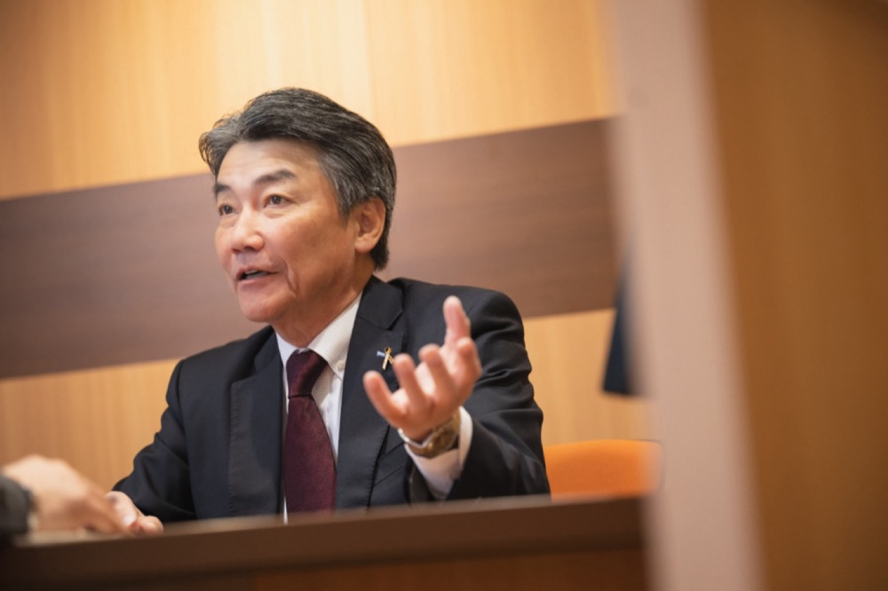
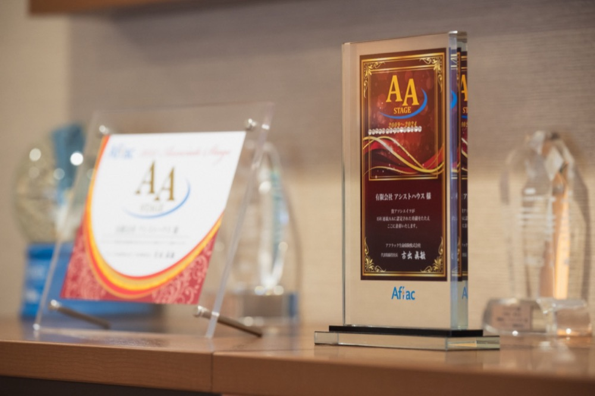
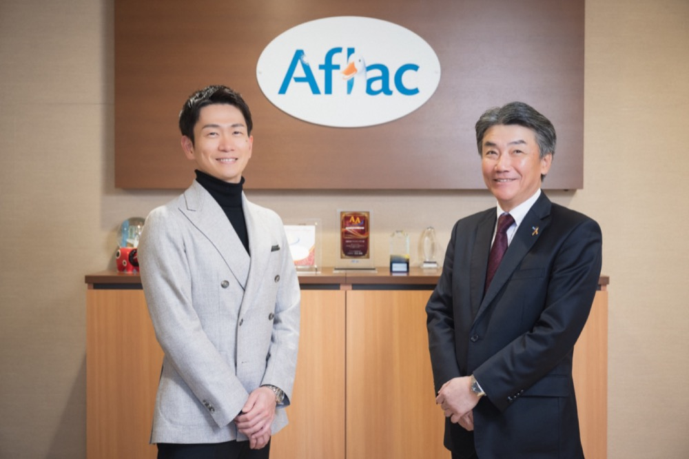

入社した直後、創業者が急逝して社長に就任
篠田 真
有限会社アシストハウス 代表取締役
1964年生まれ。福岡県にて幼少期を過ごす。明治大学法学部卒業後に千代田生命保険相互会社に入社。その後、9年間の代理店勤務を経て2009年2月にアシストハウスに入社。同年6月、創業者が病に倒れ、代表取締役として会社を継承した。
企業サイトを見るTRACK 01
入社した直後、創業者が急逝して社長に就任

千葉県庁に近い市の中心部に店舗を構えるアフラックの専属代理店。有限会社アシストハウスは、創業者の故鹿討秀章が千葉県で個人代理店として開業した。千葉県学校生活協同組合と団体取扱契約を締結し、県内の公立学校の教職員を対象に団体募集を開始。その後法人化して現在に至る。千葉市内の学校と市町村役場を主なマーケットとして、約1万名の顧客を有することが同社の強みだ。
同社の代表取締役を務める篠田真は、幼少期を福岡県で過ごした。大学卒業と同時に生命保険会社に新卒で就職し、退職後も別の代理店での勤務を経て2009年2月に入社した。しかし、その半年後に兼ねてから闘病中であった創業者が病に倒れて、急遽篠田が会社を継承することになった。
会社の今後に思いを巡らせていた社長に、「私で良ければ手伝いに行きましょうか？ と言って入社しましたが、余りにも急に会社を引き継ぐことになったので、準備はまったくできていませんでした。私以外の社員は事務員2人だけで、営業部員はいませんでした。創業者は、私がやりやすいように配慮してくれたのかもしれませんが、まずは営業の人材を揃えるところからのスタートでした」
TRACK 02
社員の成長を何より重視し、叱り飛ばすことはしない

若い社員との接し方に悩む経営者も多いが、「もともと怒ることが好きじゃない。社員の間違いはしっかり指摘するが、叱り飛ばすことは決してしません。自分が若い頃は厳しかったし、何度も怒鳴られて嫌な思いもした。自分がされて嫌だったことはしたくない」と言う。そんな篠田が最も力を入れているのは、社員教育だ。
「経営者としては、社員の成長を何よりも重視しています。本人にとってはもちろん、お客様に対しても、正確に対応することが大事なことですから。その結果、我が社はクレームが非常に少ないんです。営業が全ての会社ですから、優秀な社員がいなければ成り立たない」
人を育てる上で、意識していることは、保険に対する商品知識や周辺知識を正確に身につけること。
